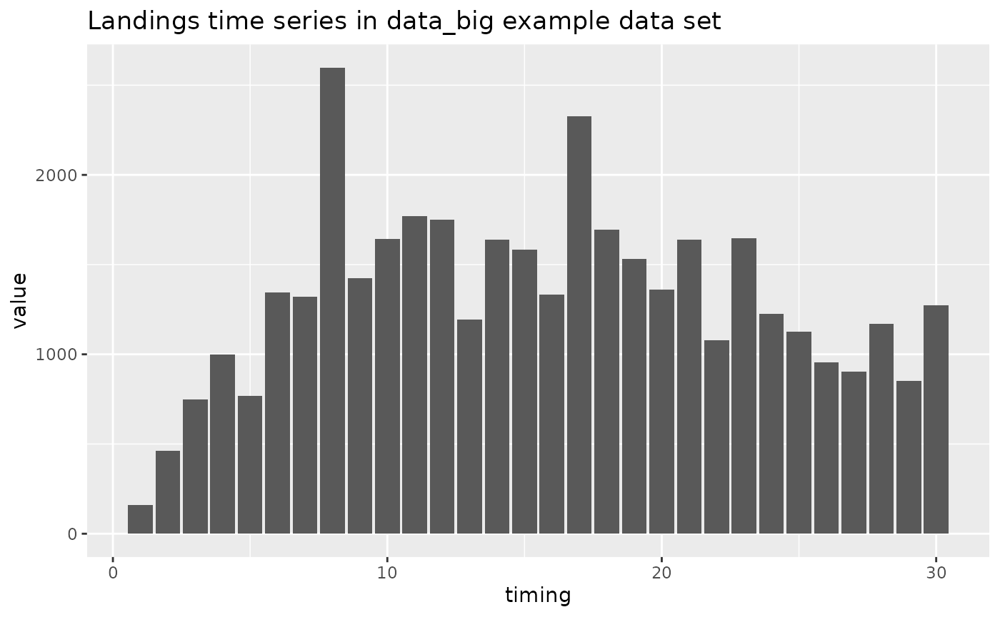
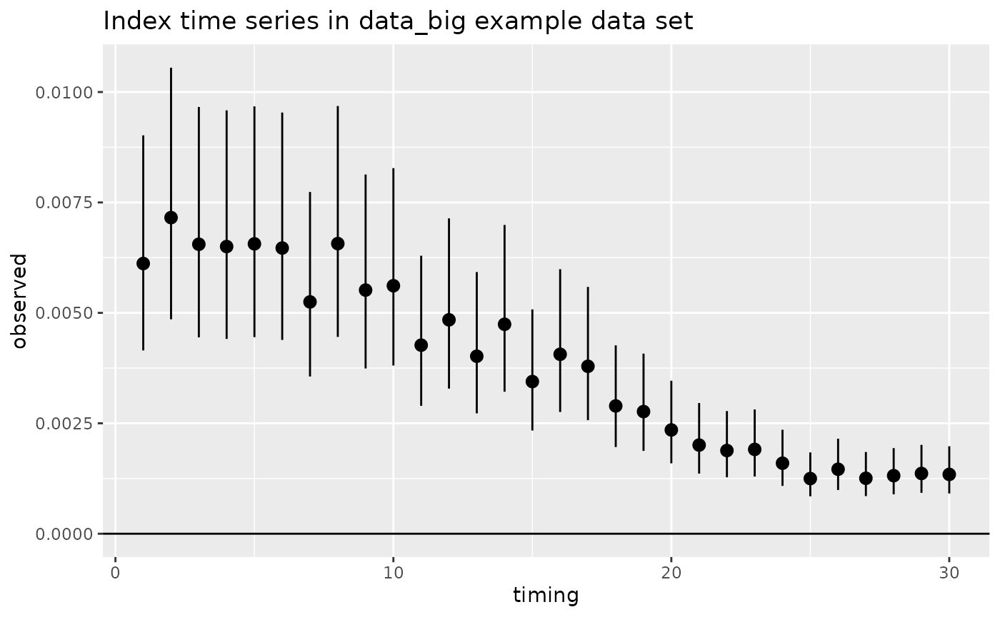
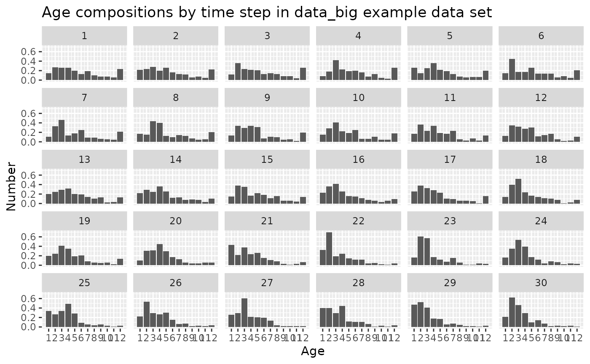
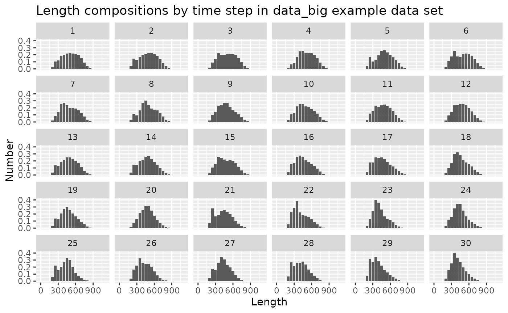
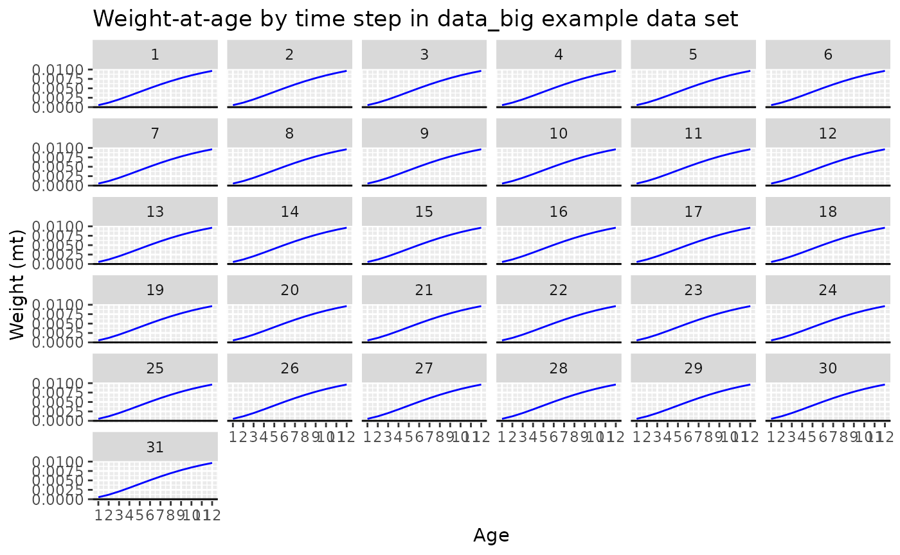
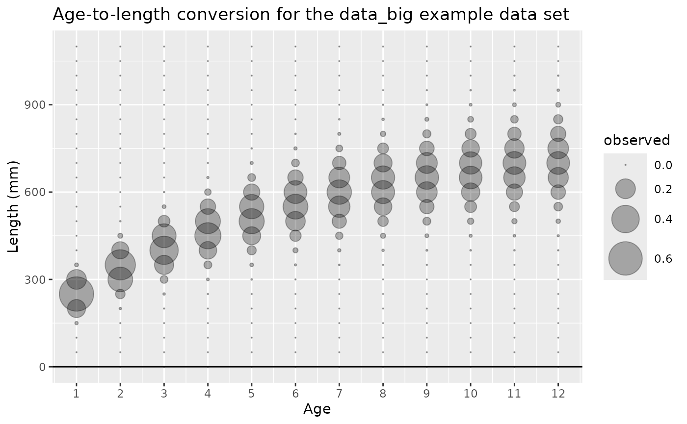

Other sources of information
This vignette is an expansion of the “Data”
section in the FIMS
overview vignette. It provides more details about the data structure
needed for a FIMS model and how to prepare your data for use in a FIMS
model using the FIMSFrame() function.
The FIMS cheatsheet includes a quick summary of the input data format.
The help page for the FIMS::data_big data set (https://noaa-fims.github.io/FIMS/reference/data_big.html
or via ?FIMS::data_big) provides detailed information about
the input data format.
Note: this vignette does not include anything about model configuration, which is covered in the overview vignette linked above.
Data format
The input data for a FIMS model is a single long data frame with the following columns: type, name, age, length, timing, value, unit, and uncertainty. Both the single table and long format are in contrast to the input format for some legacy stock assessment models where the data are provided in multiple tables, each with a different format. The SS3 data file, for instance, has separate tables for catch, indices, age compositions, length compositions, with wide tables for the composition data (each age or length bin has a different column). The use of a single, long table for data input used by FIMS makes it easier to summarize and filter the data across data types (e.g., by fleet, time step, age, etc.), as well as being better suited to the widely-used tidyverse collection of packages in R.
Two drawbacks of the long format are (1) some information is duplicated, and (2) the long format is harder to read and understand by looking at the raw data frame. To meet this second challenge, the FIMS team is working on functions to summarize, visualize, and check for errors in the input data.
The currently available values for the type column are
“age_comp”, “age_to_length_conversion”, “index”, “landings”,
“length_comp”, and “weight_at_age”. The “weight_at_age” and
“age_to_length_conversion” types are not currently treated as data in
the sense that they are not included in the likelihood, just used within
the population dynamics calculations.
The individual data types are described in more detail below after introducing the example data set that is included in the package.
data_big
A sample data frame for a catch-at-age model with both ages and
lengths is stored in the package as data_big. This data set
is based on data that was used in Li et al. (2021) for
the Model Comparison Project (github
site). The length data have since been added data-raw/data_big.R
based on an age–length conversion matrix. To see how this example data
frame was created, see the R script here R/data_big.R.
FIMSFrame()
FIMSFrame() must be used to create a data object that
can be passed to a FIMS model. This function returns an object that has
the FIMSFrame class. This class contains a data slot that
stores the input data frame and several other slots that store summary
information about the object, e.g., the fleet names, the number of age
bins, etc. All of this information can be accessed using
get_*() functions, e.g., get_n_years(),
get_fleets().
When you execute FIMSFrame() on a long data frame, such
as data_big, the function executes several error checks to
help ensure that your data is ready for a FIMS model. For example, until
the internal estimation of growth is possible, all catch-at-age models
require weight-at-age data. If your data frame does not have
weight-at-age data, then FIMSFrame() will error and return
helpful information on what you are missing.
The output of FIMSFrame() also contains summary
information about your data and has an internal plotting function. See
the FIMS
overview vignette for more information.
data_4_model <- FIMSFrame(data_big)
data_4_model## tbl_df of class 'FIMSFrame'## with the following 'types': age_comp, landings, length_comp, weight_at_age, index, age_to_length_conversion## # A tibble: 6 × 8
## type name age length timing value unit uncertainty
## <chr> <chr> <int> <dbl> <dbl> <dbl> <chr> <dbl>
## 1 age_comp fleet1 1 NA 1 0.07 proportion 200
## 2 age_comp fleet1 2 NA 1 0.1 proportion 200
## 3 age_comp fleet1 3 NA 1 0.115 proportion 200
## 4 age_comp fleet1 4 NA 1 0.15 proportion 200
## 5 age_comp fleet1 5 NA 1 0.1 proportion 200
## 6 age_comp fleet1 6 NA 1 0.05 proportion 200
## additional slots include the following:fleets:
## [1] "fleet1" "survey1"
## n_years:
## [1] 30
## ages:
## [1] 1 2 3 4 5 6 7 8 9 10 11 12
## n_ages:
## [1] 12
## lengths:
## [1] 0 50 100 150 200 250 300 350 400 450 500 550 600 650 700
## [16] 750 800 850 900 950 1000 1050 1100
## n_lengths:
## [1] 23
## start_year:
## [1] 1
## end_year:
## [1] 30Landings (type == "landings")
The landings data type contains the total catch in weight for each
time step. FIMS does not yet include the option to model discards
internally, so “landings” should account for all catch. The landings are
not associated with an age or length so those columns should only
contain NA values. The unit column should
currently always be mt. The uncertainty column
should be the standard deviation of the logged observations if you are
using the lognormal distribution to fit your data.
log_Fmort parameters for each fleet and time step with
catch can be estimated to fit the model to the landings data, informed
by the uncertainty values. Common practice is to set the uncertainty to
a small number, like 0.001, so the landings data are fit closely.
# first three rows of the landings data
FIMS::data_big |>
dplyr::filter(type == "landings") |>
head(3)## type name age length timing value unit uncertainty
## 1 landings fleet1 NA NA 1 161.6455 mt 0.00999975
## 2 landings fleet1 NA NA 2 461.0895 mt 0.00999975
## 3 landings fleet1 NA NA 3 747.2900 mt 0.00999975
# time series plot of landings data
library(ggplot2)
FIMS::data_big |>
dplyr::filter(type == "landings") |>
ggplot(aes(x = timing, y = value)) +
geom_bar(stat = "identity") +
ggtitle("Landings time series in data_big example data set")
Indices (type == "index")
The index data type contains the relative or absolute abundance index
for each time step. The inputs are similar to landings, in having
NA values for age and length, mt for
unit, and index uncertainty as the standard deviation of
the logged observations.
## type name age length timing value unit uncertainty
## 1 index survey1 NA NA 1 0.006117418 mt 0.1980422
## 2 index survey1 NA NA 2 0.007156588 mt 0.1980422
## 3 index survey1 NA NA 3 0.006553376 mt 0.1980422
# time series plot of index data
FIMS::data_big |>
dplyr::filter(type == "index") |>
ggplot(aes(x = timing, y = value)) +
geom_point() +
geom_pointrange(aes(
ymin = qlnorm(p = 0.025, meanlog = log(value), sdlog = uncertainty),
ymax = qlnorm(p = 0.975, meanlog = log(value), sdlog = uncertainty)
)) +
geom_hline(yintercept = 0) +
ggtitle("Index time series in data_big example data set")
Age compositions (type == "age_comp")
The age-composition data type contains the age distribution of a
fleet for a time step. The age column contains integer ages
defining the age bins. While standard FIMS models typically assume age
bins start at zero, the data_big example currently uses ages ranging
from 1–12, and thus, recruitment will be age-1 fish not age-0 fish. The
value column contains either the number or the proportion
of the catch or survey in each age bin. The unit column
should be either “number” or “proportion”. If “proportion” is used, the
values are checked at a later step to confirm that they sum to 1.0. The
uncertainty column should be the input sample size for the
time step (equal across all ages within that time step).
# first three rows of the age composition data
FIMS::data_big |>
dplyr::filter(type == "age_comp") |>
head(3)## type name age length timing value unit uncertainty
## 1 age_comp fleet1 1 NA 1 0.070 proportion 200
## 2 age_comp fleet1 2 NA 1 0.100 proportion 200
## 3 age_comp fleet1 3 NA 1 0.115 proportion 200
# plot of age compositions by time step
FIMS::data_big |>
dplyr::filter(type == "age_comp") |>
ggplot2::ggplot(
ggplot2::aes(x = age, y = value)
) +
ggplot2::geom_bar(stat = "identity") +
ggplot2::xlab("Age") +
ggplot2::ylab("Number") +
ggplot2::facet_wrap(~timing) +
ggplot2::scale_x_continuous(breaks = get_ages(data_4_model)) +
ggtitle("Age compositions by time step in data_big example data set")
Length compositions (type == "length_comp")
The length-composition data are similar to the age compositions,
except with values in the length column and
age = NA. FIMS does not yet have parametric growth
implemented so the length bins can be any values as long as the
distribution of each age among those bins is provided by the
age_to_length_conversion data type described below.
# first three rows of the length composition data
FIMS::data_big |>
dplyr::filter(type == "length_comp") |>
head(3)## type name age length timing value unit uncertainty
## 1 length_comp fleet1 NA 0 1 9.238773e-18 proportion 200
## 2 length_comp fleet1 NA 50 1 5.892510e-12 proportion 200
## 3 length_comp fleet1 NA 100 1 1.610390e-07 proportion 200
# plot of length compositions by time step
FIMS::data_big |>
dplyr::filter(type == "length_comp") |>
ggplot2::ggplot(
ggplot2::aes(x = length, y = value)
) +
ggplot2::geom_bar(stat = "identity") +
ggplot2::xlab("Length") +
ggplot2::ylab("Number") +
ggplot2::facet_wrap(~timing) +
ggtitle("Length compositions by time step in data_big example data set")
Weight-at-age data (type == "weight_at_age")
The weight-at-age data are not currently included in the likelihood
and are just used for converting from numbers to biomass in the
population dynamics. The unit column should be
mt and the uncertainty should be NA.
Two key features of the weight-at-age data are
- these data are required for the one additional time step (final value for timing + 1), and
- the values are currently shared among fleets and throughout the dynamics (so only need to be provided once).
The final timing + 1 values are required because FIMS reports spawning biomass at the beginning of the year for every year, including the year after the last catches are removed from the population.
The weight-at-age values for the data_big are identical
across time steps, and are provided for timing = 1 to 31 and associated
with name = “fleet1”.
# first and last entries of the weight-at-age data
FIMS::data_big |>
dplyr::filter(type == "weight_at_age") |>
head(3)## type name age length timing value unit uncertainty
## 1 weight_at_age fleet1 1 NA 1 0.0005306555 mt NA
## 2 weight_at_age fleet1 1 NA 2 0.0005306555 mt NA
## 3 weight_at_age fleet1 1 NA 3 0.0005306555 mt NA## type name age length timing value unit uncertainty
## 370 weight_at_age fleet1 12 NA 29 0.009636695 mt NA
## 371 weight_at_age fleet1 12 NA 30 0.009636695 mt NA
## 372 weight_at_age fleet1 12 NA 31 0.009636695 mt NA
# check that the values are identical across time steps within each age
FIMS::data_big |>
dplyr::filter(type == "weight_at_age") |>
dplyr::group_by(age) |>
dplyr::summarize(n_distinct = dplyr::n_distinct(value))## # A tibble: 12 × 2
## age n_distinct
## <int> <int>
## 1 1 1
## 2 2 1
## 3 3 1
## 4 4 1
## 5 5 1
## 6 6 1
## 7 7 1
## 8 8 1
## 9 9 1
## 10 10 1
## 11 11 1
## 12 12 1
# plot of weight-at-age values by time step
FIMS::data_big |>
dplyr::filter(type == "weight_at_age") |>
ggplot2::ggplot(
ggplot2::aes(x = age, y = value)
) +
ggplot2::geom_line(color = "blue") +
ggplot2::xlab("Age") +
ggplot2::ylab("Weight (mt)") +
ggplot2::facet_wrap(~timing) +
ggplot2::scale_x_continuous(breaks = get_ages(data_4_model)) +
geom_hline(yintercept = 0) +
ggtitle("Weight-at-age values by time step in data_big example data set")
Age-to-length conversion
(type == "age_to_length_conversion")
The age-to-length conversion data type contains the distribution of
lengths for each age. The age and length
columns contain all the combinations of age and length bins, and the
value column contains the proportion of fish at each age
that are in each length bin. The unit column should be
“proportion”. A single set of the age-to-length conversion data is
required, rather than separate copies for each fleet (name) or time
step. The age-to-length conversion data are not currently included in
the likelihood but are used to convert numbers at age to numbers at
length for the population dynamics calculations when length compositions
are included in the model.
Note: purely age-based models which have no length-composition data can omit the age-to-length conversion data as well.
# first and last entries in the age-to-length conversion data type
FIMS::data_big |>
dplyr::filter(type == "age_to_length_conversion") |>
head(3)## type name age length timing value unit
## 1 age_to_length_conversion <NA> 1 0 NA 1.261739e-16 proportion
## 2 age_to_length_conversion <NA> 1 50 NA 8.385820e-11 proportion
## 3 age_to_length_conversion <NA> 1 100 NA 2.297363e-06 proportion
## uncertainty
## 1 200
## 2 200
## 3 200## type name age length timing value unit
## 274 age_to_length_conversion <NA> 12 1000 NA 8.704578e-05 proportion
## 275 age_to_length_conversion <NA> 12 1050 NA 4.607774e-06 proportion
## 276 age_to_length_conversion <NA> 12 1100 NA 1.572035e-07 proportion
## uncertainty
## 274 200
## 275 200
## 276 200
# show that the number of rows in the age-to-length conversion data type is equal to the product of the number of unique combinations of age and length
FIMS::data_big |>
dplyr::filter(type == "age_to_length_conversion") |>
nrow()## [1] 276
# 12 ages, 23 length bins:
length(unique(na.omit(FIMS::data_big$age))) * length(unique(na.omit(FIMS::data_big$length)))## [1] 276
# plot of age-to-length conversion values for the data_big example data set
FIMS::data_big |>
dplyr::filter(type == "age_to_length_conversion") |>
ggplot2::ggplot(
ggplot2::aes(
x = age,
y = length,
size = value
)
) +
ggplot2::geom_point(color = gray(0, alpha = 0.3)) +
ggplot2::scale_size_continuous(range = c(0.1, 12)) +
ggplot2::xlab("Age") +
ggplot2::ylab("Length (mm)") +
ggplot2::scale_x_continuous(breaks = get_ages(data_4_model)) +
geom_hline(yintercept = 0) +
ggtitle("Age-to-length conversion values for the data_big example data set")